Australian Toolbook User Group


Mike Florence's Tips Page
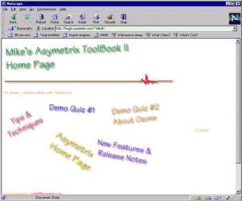
http://hugin.asymetrix.com/~mikef/
This site is interesting as it has been created in Toolbook itself! Mike is a well known employee of Asymetrix, and the site is hosted by the main asymetrix.com site.
On this site you will find tips on how to export your books into HTML format, plus examples of this process.
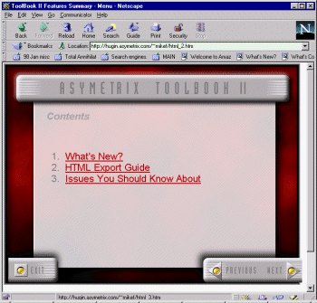
This is a site that certainly practices what it preaches!
Erik Reitan's Page
 Link out of date?
Link out of date?
I believe this site is now defunct. Please email us if you have any information about
the status of this site.
This site is maintained by Erik Reitan - who co-wrote the book Special Edition Using Asymetrix Multimedia Toolbook 4 by Natal, Blake, Reitan, and Peterson.
This site mainly consists of links to other Toolbook resources plus a number of focus topics, such as how to create hybrid applications using Toolbook: The term hybrid application refers to an application where some content resides on a local hard disk or CD-ROM, while other content is obtained from the Internet.
The site includes sample script for controlling Neuron interactions over the internet, plus some information on using the streaming version of Neuron, entitled Impulse.
Denny Dedmore’s Site
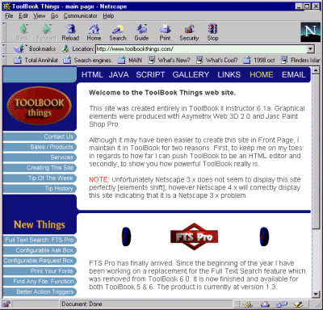
http://www.toolbookthings.com
Denny’s ToolBook Things web site, created entirely in ToolBook II Instructor 6.0, graphics created with Web 3D 2.0 and touch-ups with Paint Shop Pro.
Here you will find various hints and tips, sample scripts, and useful utilities that Denny has created.
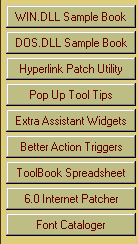
Figure 39 - Some of the utilities that Denny has created:
For example, the ‘Better Action Trigger’ is a replacement to Toolbook II Assistant’s action trigger dialog box (which doesn’t let you rearrange the order of actions) - the new dialog box available from this site does allow this!
Another interesting book you can download is the
WIN.DLL sample book - this ToolBook 4.0 utility demonstrates how each of the WIN.DLL functions work. There is an actual working demo of each function (where appropriate) and access to the script controlling it.
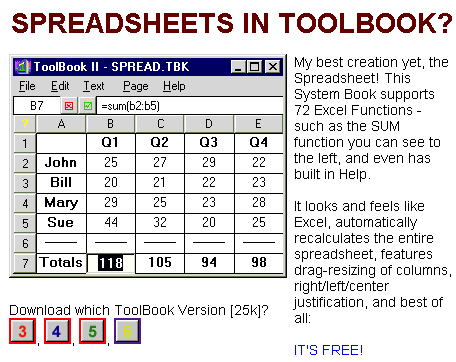
Figure 40 - Download a simple Toolbook spreadsheet engine from Denny’s site
You can even download a Toolbook spreadsheet from Denny’s site: It is available for all versions of Toolbook and comes as a .SBK extension to Toolbook’s authoring menu.
Once you have added it to your startup system books (using Tools/Preferences) you will have access to a menu item allowing you to create 1 spreadsheet per page of a maximum size of 20x35.
The spreadsheet supports many Excel functions as well as an Microsoft Excel ‘look and feel’ - and might be a good replacement to a VBX or OCX/ActiveX control if your needs are modest.
LATEST on Denny's site
<<...>>
Full Text Search replacement (fts was removed from Toolbook version 6 - here is a
replacement)
Demo on his site - free to download
Details: http://www.toolbookthings.com/ftsdownload.htm
Spreadsheet in ToolBook
Details: http://www.toolbookthings.com/spreadsheet.htm
configurable request box
Details: http://www.toolbookthings.com/configrequestbox.htm
configurable Ask Box
Details: http://www.toolbookthings.com/betteraskbox.htm
QuicktimeVR Demo
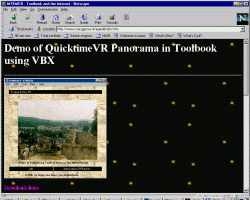
http://www.ccer.ggl.ruu.nl/arjandb/qtvr.htm
The book demonstrates how to display a QuicktimeVR Panorama in Toolbook, using a VBX-control. Step by step instructions are provided, including sample books.
Slade Mitchell's Resources for ToolBook
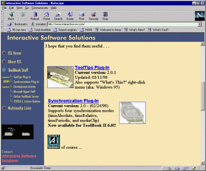
http://www.interactive-sw.com/
This site has a couple of great plug-ins for Toolbook. The Tooltips plug in creates small boxes with descriptive text which appear when users move their mouse pointer over certain objects. The Synchronization control is a plug-in which allows developers to synchronise animations and voice overs - or anything else requiring timers - without resorting to too much code. Any object can become a Synchronization control object.
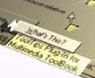
Figure 41 - Slade's Tooltips plug in. Note that Version 6.01 of Toolbook II for the first time, has a simple, built in Tooltips facility
This site also hosts a fascinating application called the ToolBook Online User Survey, where you can download a book, run it - and the results will be packed up and transmitted over the internet. Unlike most surveys, you can see the current accumulated results from others who have answered the survey. The survey uses ToolBook II Instructor's Internet communication capabilities to access and update the current survey results on a remote Web server.
Finally, Slade Mitchell has some good developer articles stored here:
Platte Canyon Plug-Ins for Toolbook
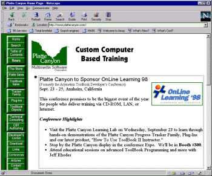
http://www.plattecanyon.com/
This site has a range of authoring tools to augment Toolbook including Tracker, Administrator, Navigator, and Test Tracker. Progress Tracker adds detailed user tracking, bookmarks, indexes, and "return to last page" functionality to any Toolbook training application - tracker provides the trainer the ability to track student progress through various training modules and includes a number of time-saving utilities. Navigator provides the ability for a developer to create an unlimited number custom navigation paths through a ToolBook application -- without any custom scripting.
The Plug-In Pro provides a complete methodology for storing content externally, to create multi lingual training with on-the-fly language switching.
Marty Weller's ToolBook Samples
Over the years, Martha Weller has conducted several training workshops and courses related to different versions of ToolBook. At the request of previous students and colleagues, Martha has made these various files available over the internet.
This site contains examples ranging back to version 1.53 of Toolbook all the way to Toolbook 3, 4 and II / (5). Some of the many samples available at this site are:
CueClip This is a simple demonstration of how to cue clips before playing them.
Lesson 8 This lesson deals with transition effects and contains an example of looping a video clip until you click the mouse.
Kiosk Template This is a template for a kiosk that Martha developed. It contains a timer script to allow resetting to the opening screen after a predetermined time.
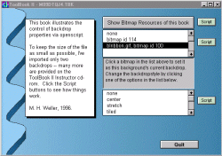
Kisok95.zip This is the final version of the kiosk we created during the course. It is designed for use on machines with THOUSANDS of colors available. It illustrates how to open viewers in separate books and how to run a timer from the main book to control shutting down other books.
backdrops.tbk (177K) Demonstrates reading resources into a listbox and changing the backdrop via openscript.
Hword.zip illustrates how you might handle switching the color used for hotwords, once the hotword has been clicked.
Combofnt.tbk illustrates how you can use combo boxes in a palette viewer to change font/style/size text settings.
newless9.zip This lesson provides an example of using the built-in database features of Multimedia ToolBook to access a dBASE 3 file. The lesson discusses using the Database Exchange book that comes with Multimedia ToolBook to create a front-end and then how to modify the front-end for a suitable kiosk design.
play1.tbk (54K). This book illustrates 3 ways to control volume. It can be examined using Neuron. It contains 2 audio files that will download when needed (50K + 75K). Jan. 11, 1997
RealVideo using Toolbook
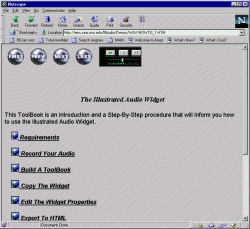
http://ems.cea.wsu.edu/IllAudio/Demos/WAV/HOWTO_1.HTM
Info on how to serve up RealAudio/Video using Toolbook.
To access thousands more tips offline - download Toolbook Knowledge Nuggets


{kind=link}